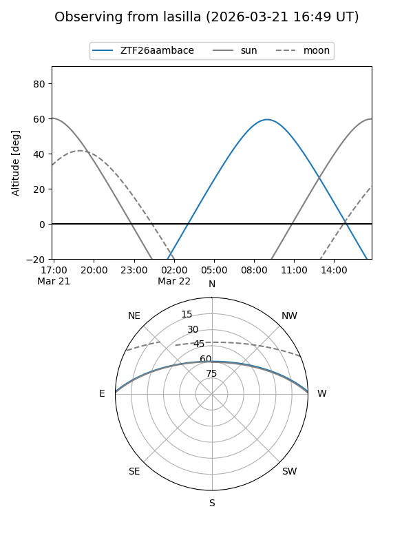
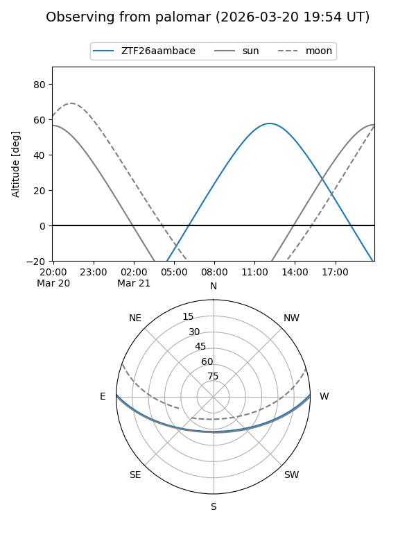
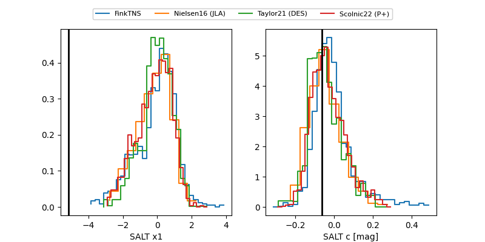

ZTF26aambace
Target ZTF26aambace at 2026-03-21 14:17
Aliases and brokers:
FINK: link
Lasair: link
ALeRCE: link
alt names
ZTF26aambace (ztf,fink_ztf)
Coordinates:
equatorial (ra, dec) = 243.7701,+1.24962
equatorial (HMS+DMS) = 16:15:04.82,+01:14:58.62
galactic (l, b) = (13.8762,+34.81836)
Flags:
likely cv
Photometry:
last ztfg=17.81, ztfr=15.99
2 ztfg, 1 ztfr detections
Lightcurve
Visibility


Additional plots
